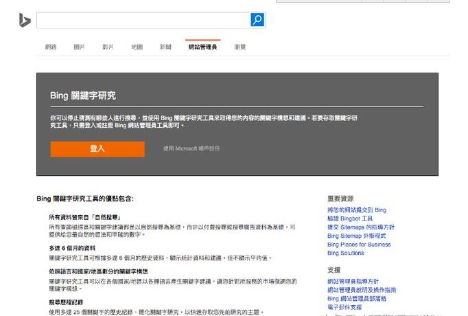
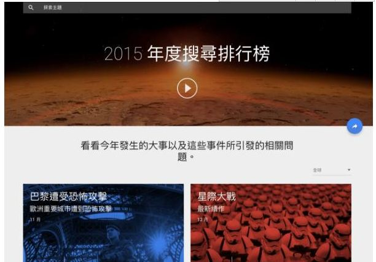
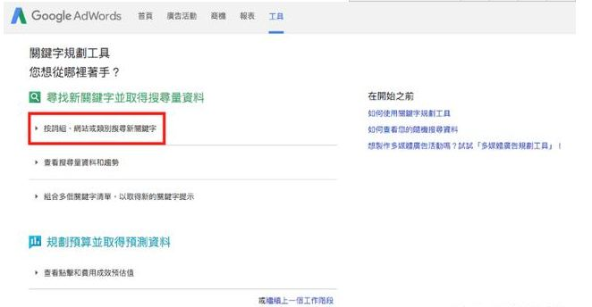
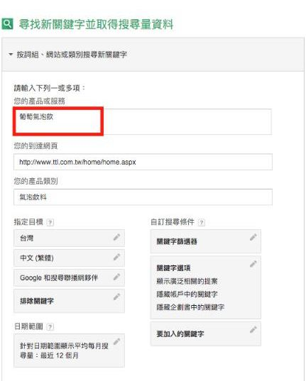
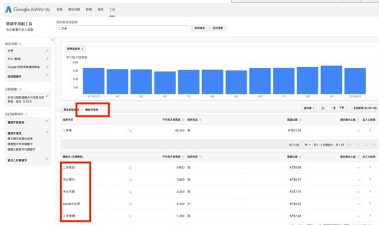
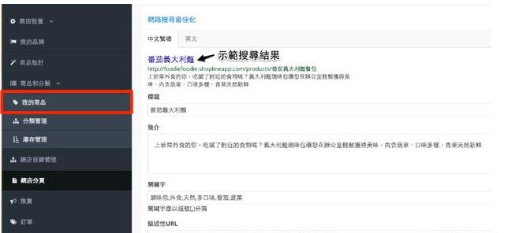

对于大部分的网站经营者来说 搜索引擎最佳化/搜索引擎优化 SEO（Search Engine Optimization）这个词汇肯定不会陌生，甚至都快听厌了，而对于新加入电商经营的卖家们来说，SEO肯定也是未来在网络世界奋斗当中不可不钻研的课题。
简单来说，做SEO优化就是运用一系列的方法，让「搜索引擎」明白、认同你的网站内容，使你的网站排名出现在自然搜索结果的前面，继而取得高流量。而设置关键字绝对是SEO不可或缺的第一步，然而到底要如何开启你的关键字策略呢？
SEO是各种烦琐任务的集合
SEO 这个名词，的确会吓怕一些很多刚踏入电商行列的新手卖家！让很多电商经营者选择直接花大钱，找代理商甚至直接投降假装没看到。
实际上SEO虽然有许多专业技巧在背后，但其本质其实是许多网站架构细项任务的集合，需要时间以及系统性的管理，如果将SEO 的繁复工作条列之后，逐一将每个任务完成，就可以让你的网站渐渐拨云见日，爬上搜索第一页。而今天海瑶SEO小编就要着重于如而制定网站的关键字策略。
为何要做关键字研究（keyword research）
在SEO众多繁复任务当中，其中一项重要的基本功就是关键字研究。关键字研究是一项基本但是可以更清楚地理解你网站当中还有哪些潜在的关键字机会，让更多迷失在搜索引擎当中的流量导入你的网站当中，这些搜索词汇可能以千奇百怪没想过的方式出现，要获得这样的机会，必须透过关键字研究来获取这些流量。
关键字研究从何开始？
在开始了解如何做关键字搜索之前，先介绍几个重要的名词：
1.目标关键字：
目标关键字的目的在于，让消费者搜索字词可以直接搜索到你的网站，例如网站销售手机mon贴，那么 「手机」、「mon贴」 就绝对是你的目标关键字，然而可想而知这样的关键字拥有超级多的电商竞争者，要在这样的关键字取得第一页的位置，无论难度、成本都相当高，再者这样广泛的关键字流量质量可能不高，不会带来好的转换价值，因此接下来我们要介绍重要的概念 「长尾关键字」。
2. 长尾关键字：
长尾关键字，指的是许多非主要关键字，而累积这些小流量但是庞大的关键字，就有可能超越主要关键字的流量总和，也许一个月只有十个点击，然而长期且大量的累积下来，可以给网站带来显著的帮助。然而，长尾关键字的重点不代表关键字的字词长短，而是除了主要的目标关键字外，延伸至相关关键字，掌握了长尾的原则之后，就可以掌握机会。
3.网站关键字架构：
做SEO优化最好的开始就是把网站里的每一页信息都清楚地记录下来，特别是网页标题、简介、关键字等等。在研究了关键字之后，必须有逻辑地把关键字架构完整记录下来，无论是SEO 或者广告都必须做好架构，如果站内的设定还没架构好，就算在其他的SEO优化项目上下足了功夫也不会带来很好的效果。
三个免费工具做关键字研究（Keyword Research）
接下来海瑶SEO要介绍几个不管是SEO老手或初哥都必用的几个关键字规划工具，让你可以透过这些工具发现你没有想过的关键字以及每个关键字的竞争状态。
1.Bing Keyword Research Tool（Bing 关键字研究工具）
Bing（包含了Yahoo搜索引擎） 本身就是庞大的搜索引擎，在背后也有极强大的资料系统支撑，Bing的功能层面上也相当的完整，包括推荐关键字、搜索量、搜索趋势都可以从后台看到，基本上每一个店主都应该使用，记得要把语言设为繁体中文（依照自己商品的市场），之后也能将网站资料直接汇出。

2.Google Trends（Google搜索趋势）
经营电商网站必须了解当下时事、热门关键字，透过Google搜索趋势可以看到热门新闻、时事以及关键字的搜索趋势。如果在做大范围搜索或者竞争比较时，Google搜索趋势是一个简易上手的工具，画面也很美观。（需要注意的是如果关键字搜索量不够大的话，将无法显示结果）

3.Google Keyword Planner（Google 关键字规划工具）
Google 占据搜索引擎的龙头地位，在这样巨量关键字经常性地被使用之下，Google累积了庞大的数据库，因此如果要做 SEO 绝对需要顺着Google搜索引擎的逻辑。同时，Google 也提供了许多工具让大家使用，其中 Google Adwords 当中的 Google Keyword Planner 就是一个可以用来找寻关键字的工具（需先注册 AdWords 账号）这个工具也是我最推荐网站经营者必须要熟悉的关键字工具。
现在带领大家深入了解Google Keyword Planner 这个好用的关键字工具（需注意的是这个工具的资料取决于广告搜索，不过还是相当有价值）。

首先进入 Google Adwords 后点选上方的工具栏，选取红框内的工具。

将自己的产品属性以及其他目标输入完整（记得将指定目标地区、语言填写在自己的目标市场，并选取广泛比对可以获得更多长尾关键字）

接下来会出现了你选取的关键词分析报告，在这份报告当中有几个重要的名词你必须要了解，并且知道其背后隐含的价值，才能完善的利用这份报告。
首先点关键字提案，会出现下方红框内的关键字，这时候你可以看到每组相关关键字都有几个数据：
平均每月搜索量：根据所选的地区和搜索联播网指定目标，使用者每月搜索该关键字的平均次数。这是系统根据过去 12 个月内该字词搜索次数算出的平均值。
竞争程度：判断某个关键字在搜索引擎所面临的竞争程度。
这两个数据可以判断这些关键字是否适合做为你的长尾关键字，再纳入自己的关键字架构当中。
在你的网店加入关键字
除了上述提到的三项基本工具，获取关键字的工具以及方法还有相当多种，然而工具能帮助你的部分在于发掘人脑没有想过的关键词汇，关键字搜索最重要的还是需要重新思考这些关键字与商品页面的连结，以及有逻辑地编排你的关键字架构（可以多着重放置关键字于简介的部分去提升SEO）。
做好关键字研究之后，最重要的步骤就是将关键字完整地加入到商品页面，海瑶的卖家们都可以拥有轻松加入关键字的特权，透过简单的输入就可以直接加入关键字到页面当中。

关键字研究在SEO当中绝对不是唯一的任务
网店经营者们要注意的是，SEO虽然不象是其他营销追踪需要及时性的观察数据，但是如果要将网站提升到下一个SEO层次，就需要有长期抗战的决心，必须要定期检视每个关键字的表现，调整关键字架构以及持续为商店的SEO策略作出调整，并且完成其他SEO项目，海瑶SEO也会持续推出SEO相关文章让卖家们持续精进自己的网站排名。
关键字搜索在SEO当中绝对不是唯一的任务，然而作为网站的基本架构，卖家们绝对要有自己的关键字策略，并持续性检查关键字状态。